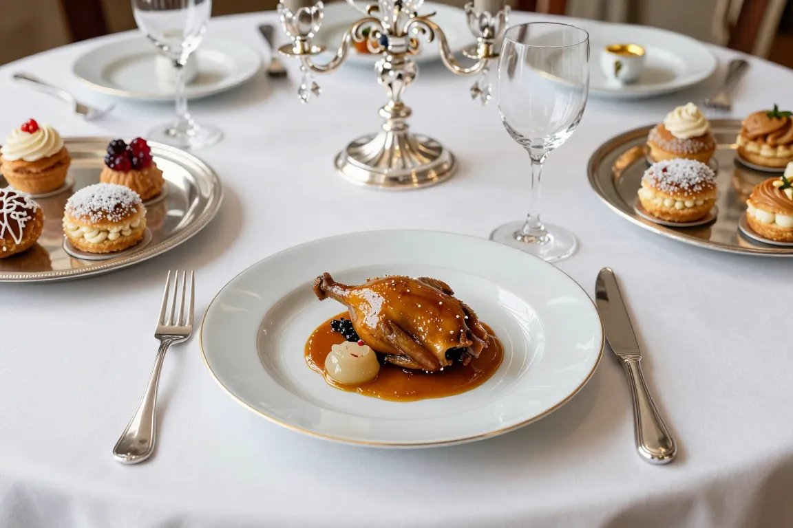

кухня · 1815–1880 · также: Кухня Карема, Большая кухня, Высокая французская кухня XIX века
Кухня больших домов в том виде, как её записал Мари-Антуан Карем. Четыре больших соуса образуют основу системы. Тесто и сахар складываются в пьес-монтэ, похожую на здание. Много блюд стоит на столе одновременно.

Главная идея
Сделайте кухню искусством порядка и зрелища: система соусов на плите и архитектура из сахара и теста на столе.
Принципы дизайна
Выводите каждый соус из малого набора больших: эспаньоль, велуте, аллеманд и бешамель.
Сначала варите бульон и осветляйте его до стеклянной прозрачности.
Стройте пьес-монтэ из сахара и теста в форме храма, руин или фонтана.
Украшайте каждое блюдо атле: шпажкой с трюфелем или раком наверху.
Подавайте по-французски: много блюд сразу, по рисунку, начерченному на плане.
Покрывайте холодное блюдо шо-фруа и аспиком и выводите на нём узор кондитерским мешком.
Пишите каждый рецепт точными шагами и давайте имя каждой нарезке и каждому гарниру.